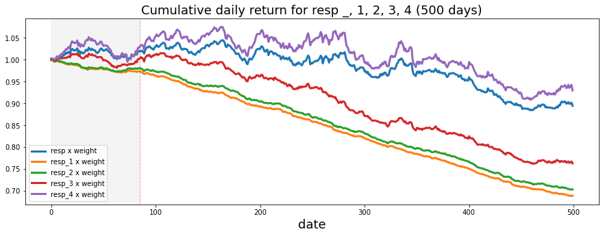
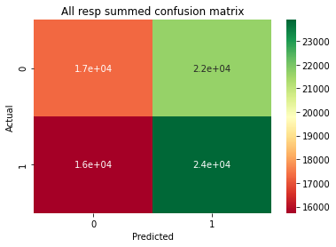
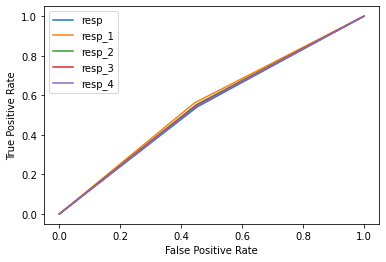

3815Jane Street Market Prediction 🎯
Jane Street Market Prediction Kaggle Competition
Got a score of 9443.499 (249th place out of 3616 competitors) using MLP.
Library 📂
Methodology
Null Values 🈳
As discussed before in my EDA notebook, we have couple of options to handle null values.
1. Drop all nans 2. Impute with median or mean 3. Feedforward/backward 4. KNN imputer 5. Be creative!
In this notebook, I used KNN imputer with 5 nearest neighbors to fill the nans. This takes a long time to run so I suggest downloading the imputed data files from here by louise2001. Note that he also uploaded soft and iterative imputes.
Import Data 📚
In this notebook, we are just going to load the imputed data instead of running the feature engineering here. Since it is very time consuming and takes a lot of RAM.
| date | weight | ts_id | resp_1 | resp_2 | resp_3 | resp | resp_4 | feature_0 | feature_1 | ... | feature_120 | feature_121 | feature_122 | feature_123 | feature_124 | feature_125 | feature_126 | feature_127 | feature_128 | feature_129 | |
|---|---|---|---|---|---|---|---|---|---|---|---|---|---|---|---|---|---|---|---|---|---|
| 0 | 0 | 0.000000 | 0 | 0.009916 | 0.014079 | 0.008773 | 0.006270 | 0.001390 | 1 | -1.872746 | ... | 0.603878 | 6.086305 | 1.168391 | 8.313583 | 1.782433 | 14.018213 | 2.653056 | 12.600292 | 2.301488 | 11.445807 |
| 1 | 0 | 0.138531 | 4 | 0.001252 | 0.002165 | -0.001215 | -0.002604 | -0.006219 | 1 | -3.172026 | ... | 0.745019 | 5.354213 | 0.344850 | 4.101145 | 0.614252 | 6.623456 | 0.800129 | 5.233243 | 0.362636 | 3.926633 |
| 2 | 0 | 0.116557 | 8 | -0.005460 | -0.007301 | -0.009085 | -0.001677 | -0.003546 | 1 | -3.172026 | ... | 1.120067 | 4.167835 | 1.537913 | 4.785838 | 1.637435 | 6.968002 | 2.354338 | 5.825499 | 1.778029 | 4.740577 |
| 3 | 0 | 0.160117 | 9 | 0.005976 | 0.004345 | 0.023712 | 0.020317 | 0.035360 | 1 | 2.744408 | ... | 1.430190 | 3.332330 | 1.796860 | 3.177064 | 0.999252 | 2.906432 | 1.589816 | 2.435999 | 1.472419 | 2.245991 |
| 4 | 0 | 0.109651 | 10 | 0.006899 | 0.003405 | 0.000134 | -0.000690 | -0.003040 | 1 | -3.172026 | ... | 1.581096 | 6.305170 | 2.324290 | 4.881133 | 2.115830 | 6.337250 | 3.059392 | 5.350729 | 2.755876 | 4.968388 |
5 rows × 138 columns
Feature Engineering 🔧
We first do two feature engineering right off the bat. 1. We are going to drop any rows with ‘weight’ column equal to 0. This tells us that overall gain from such trade is 0. This would be like telling machine to just guess if learned correctly.
2. To explain why we are dropping all dates before day 85 can be shown visually below. Before the day 85, we can clearly see that the trend has changed quite drastically.
7310
Note that we only have 130 features compared to over 2 million datas. We easily make more features and avoid curse of dimensionality.
(1571415, 139)Let us do log transform and add them as new columns to the dataframe. Since performing on all features will give me out of memory error, let’s do this on group_0 which has tag_0 from features.csv. For more information, check out my EDA notebook.
| feature_0 | feature_1 | feature_2 | feature_3 | feature_4 | feature_5 | feature_6 | feature_7 | feature_8 | feature_9 | ... | log_73 | log_79 | log_85 | log_91 | log_97 | log_103 | log_109 | log_115 | log_122 | log_123 | |
|---|---|---|---|---|---|---|---|---|---|---|---|---|---|---|---|---|---|---|---|---|---|
| 0 | 1 | 3.151305 | 5.467693 | -0.164505 | -0.189219 | 0.663966 | 0.988896 | 0.661407 | 0.897346 | 2.184804 | ... | 4.371497 | 4.954968 | 1.009198e-07 | 1.235292e-07 | 1.372731e+00 | 7.735990e-01 | 1.583237 | 0.994426 | 2.206237 | 2.390646 |
| 2 | 1 | 1.514607 | 0.596214 | 0.324062 | 0.154730 | 0.845069 | 0.521491 | 0.860309 | 0.595352 | 0.310387 | ... | 4.385074 | 4.956836 | 1.009198e-07 | 1.235292e-07 | 7.875868e-01 | 5.235099e-01 | 0.793093 | 0.487668 | 2.191892 | 2.100277 |
| 4 | 1 | -0.833827 | -0.049648 | 0.262484 | 0.421901 | 0.098124 | 0.171741 | 0.034455 | 0.169169 | 0.512029 | ... | 4.373749 | 4.934122 | 6.493667e-01 | 8.441718e-01 | 1.314139e+00 | 1.969321e+00 | 1.542457 | 2.065858 | 1.813171 | 2.373700 |
| 5 | 1 | -3.172026 | -3.093182 | 0.155047 | 0.343024 | 0.451619 | 0.914937 | -0.596771 | -0.827370 | -0.974472 | ... | 4.395633 | 4.958532 | 1.072512e+00 | 7.936777e-01 | 1.070915e-07 | 7.520313e-08 | 1.298665 | 0.488986 | 1.943198 | 2.112894 |
| 6 | 1 | -3.172026 | -3.093182 | 0.188790 | 0.232964 | 0.500087 | 0.639725 | -0.083674 | 0.019814 | -4.050318 | ... | 4.390247 | 4.959537 | 8.272507e-01 | 1.036085e+00 | 6.587185e-01 | 4.546515e-01 | 1.000972 | 1.028346 | 1.824567 | 2.101414 |
5 rows × 147 columns
Other ideas for feature engineering: 1. aggregating categorical columns by ‘tags’ on features.csv 2. count above mean, mean abs change, abs energy 3. log transform, kurt transform and other transforms 4. get creative!
Reasons not to do more feature engineering: 1. We have no idea what the features represent so it might be meaningless and dangerous 2. The dataset is really big so adding couple more columns will make me run out of memory 3. Much slower computation
Split data ✂️
We are going to use approximately 20000 data as test set. Our target value is action which we already have defined as any weight times resp above 0.(positive trades)
0Implementation #2
Algoritms & Technique
For technique, we already applied a lot of our knowledge from our EDA into our dataset. (Feature engineering, imputing nulls, dropping < 85 days, etc). For algorithm, we are going to use machine learning.
Now we have our data ready for training. There are hundreds of classifier model we can choose from and explore. However, after studying the Kaggle notebooks other participants have submitted, all high scored model seem to use Neural Network. I am going to try using random forest classifier and MLP to experiment here. Random Forest are always good for early because it is easy to just build and evaluate. Neural network is good at learning complicated models with the right parameter tuning.
#### Metrics Since this is a multiclass-classifying problem (5 types of ‘resp’ -> gave us 5 pos vs neg target variables), for performance metrics we are going to use AUC(area under curve) as well as pure accuracy score for overall performance. With this metrics, we can see how our model is performing on unseen data and prevent overfitting easily to see any area for improvement accordingly. Sklearn and Seaborn provides great graphing tools for these metrics as well. #### Complications Note that the worst complication I had to face going through rest of this notebook was the size of the data. Depending on your computer’s RAM size and GPU computation speed this experience will vary. In my case, I ran into out of memory a hundreds of times. To avoid this, try using cloud training. If not make sure to save your computed data frequently and clean RAM with gc.collect and del function to free up space as much as possible.
Results
Random Forest Classifier evaluation and validation
test accuracy: 0.5242761692650334resp
[[3474 4349]
[3205 4687]]
resp_1
[[4261 3487]
[3768 4199]]
resp_2
[[3740 4001]
[3367 4607]]
resp_3
[[2823 4959]
[2643 5290]]
resp_4
[[3003 4858]
[2743 5111]]
Result 1 justification
So we got about 52.4% accuracy with random forest.
From the confusion matrix, we can tell that the model is having harder time predicting 0’s correctly. It is actually doing a good job of classifying 1’s though! So with this model, we can expect to get lots of good trades but also fail to not go for bad trades.
Result 1 implementation
This was our first pass solution. Although we were able to get a positive score of 52.4%, when submitted to Jane Street for Evaluation, it returned a score of 0. Meaning we have lost more profit than we gained. (The competition didn’t return negative scores and only calculated positive gains). This suggests that although we were able to get more ‘correct’ trades, the scale of the trades we failed to predict correctly have out-weighted our correct predictions.
MLP evaluation and validation
Classic multiple layer perceptron with AUC(Area Under Curve) metrics. After looking at many notebooks on Kaggle, MLP seem to perform the best with short run time. Let us build one ourselves.
test accuracy: 0.5501368119630926Resp: ROC AUC=0.544
Resp_1: ROC AUC=0.559
Resp_2: ROC AUC=0.551
Resp_3: ROC AUC=0.549
Resp_4: ROC AUC=0.547
<Figure size 2160x1440 with 0 Axes>Result 2 justification
This is actually good! Although one could say that the machine is doing slightly better than me if I was to go to Jane Street and randomly decide to ‘action’ on trades.
It is important to note that even though we are getting only around ~55% accuracy only, this is actually considered good for trading markets. To explain this, since Jane Market has billions of money, as long as they have a positive return rate, it doesn’t matter how much they lose because in the end they will gain more. It is like going to a casino knowing you have more chance of winning than losing. The more time you spend here, the more you will gain out of it!
Hyper-parameter tuning / Refinement
RandomSearch and GridSearch easily runs out of memory..
So from trial and error, I’ve learned that with learning rate at 1e-3, model overfits quickly around at 10 with batch_size around 5000. However, the model wasn’t able to learn much with less than 100 epochs. One solution is to add more layers and perceptrons which is what I did and the result 2 is the result of manual hyper param tuning. Before the model was definetly at around 200 epochs with same learning rate with 5000 batches giving me an accuracy of only 51%. After manual hyperparameter, (running few different param combination by myself) I was able to increase about 3.5% accuracy!
Conclusion
For my final review and conclusion, check out my blog post
Other things to try/explore: 1. Weighted training. We know that sometimes we will encounter ‘monster’ deals. It is crucial for the Kaggle competition to get these ones correct since these will probably outweight most other trades. So we could make model that focuses more on these heavy trades. (high weight X resp data) 2. Split data and train multiple models. Idea is that we could split the data into two by feature_0 and maybe one model that optimizes the ‘1’s data and another model that optimizes the’-1’s data. 3. Make much more features and explore more data (requires time and big data machines) 4. One interesting thing I learned is that apparently, in financial, it is sometimes good to heavily overfit the model. Something to do with volatile. I’ve experimented with this and indeed my utility score for the competition went really high when super overfitted with epoches over 200.